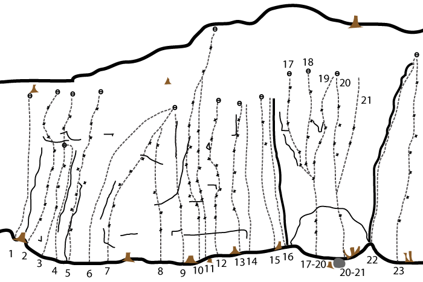
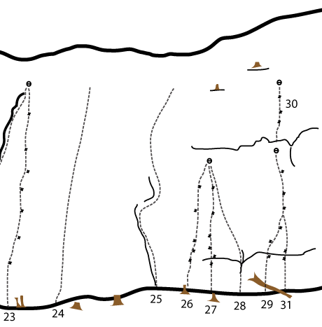
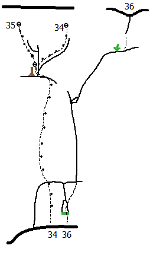

Ekoberget
Lat: 59.32703
Long: 18.31836
Allmänt
Hög och stor "strandklippa" ganska nära stan som bjuder på både trad och sportklättring i brett spann av grader.
Vägbeskrivning
<div style="width: 355; float: right; margin-left: 10px; padding: 3px; border: solid 1px #cccccc;">
<googlemap width=350 height=300 lat="59.32703" lon="18.31836" zoom="14" type="map" controls="small">
59.32703,18.31836,
Ekoberget
</googlemap>
</div>
<div style="float: right; margin-left: 10px;">
<slresa>
titel=Ekoberget
lat=18318360
long=59327030
</slresa>
</div>
Åk Värmdöleden (väg 222) i riktning Gustavsberg. Ta av i Orminge/Lännersta. Åk över motorvägen mot Orminge. Följ sedan skyltar mot Gustavsberg (Gamla Värmdövägen). Följ skyltar mot Graninge, parkera vid Graninge Stiftgård. Gå ner till vattnet i vägens förlängning och ta höger längst stranden. Klippan ligger ca 200 meter bort.
Jag håller på att gräva om vägen. följ orangea deviationen.
Se även
Leder
Vänstra delen

- 0a
- Stämborgarmärket
- 5b
- Börjar i diedret ca 10 m till vänster om För forna klätterfantaster. Något brölig stämklättring leder upp till ett mer tekniskt utsteg.
- 0b
- Yggdrasil
- 6c?
- Börjar på svat precis t v om Namnlös. Helbultad m ankare.
- 2b
- Ska ni ha stryk eller
- 5c
- Variant mellan För forna.. och Carnivore.
- 4
- Carnivore
- 4
- Trad + ankare.(obs! endast en bult i ankaret)
- 6
- Namnlös 2
- 4-
- Trad + ankare
- 7
- Lara med handklovarna
- 5c
- Insteg till vänster om stora tallen. En extra borrbult säkrar numera det förut ganska läskiga slutet.
- 7a
- Utan bojor
- 4
- Startar mellan Lara och tallen och följer en diederformation. Leden korsar Lara och har gemensamt utsteg samt ankare med Namnlös.
- 9
- Nedkomsten
- 5c
- Bultad spricka. Nytt toppankare-09
- 12
- Breña
- 7b+
- Går lite sick-sack.
- 13
- Vårkåt
- 6c
- Numera finns ett bultat vänsterutsteg. Graden ungefär den samma.
- 14
- Återkomsten
- 6
- Kilsäkrad led, som antagligen "dödats" av de leder som gjorts uppför samma parti senare. Oklart vart den går dock.
- 16
- Sanningen
- 5+
- Trad. Se upp för lös sten halvvägs upp.
- 18
- Anomalocaris
- 7a
- En av klippans finaste leder. Ihållande klättring på den vackra, ljusa väggen. Ankare.
- 20
- Mantra
- 7b
- Gör insteget till Wiwaxia upp till hyllan. Gå lite vänster och klättra pelaren upp till Wiwaxias ankare.
- 21
- Wiwaxia
- 6c+
- Efter det lite boulderartade insteget är klättringen fantastiskt fin hela vägen till toppen. Samma ankare som Mantra och Eldonia.
Högra delen


- 22a
- Ronin
- 6b+
- Ny led t.v om Tvivlet. Ankare.
- 23a
- Cykla med musik
- 6a+
- Klipp bult 1, 2 och den översta på Pikaia. Klättra där emellan till vänster om Pikaias svåra parti. Använd några få handgrepp på Tvivlet innan du traverserar tillbaks ut till Pikaias bulle vid översta bulten. Säkras med mindre friends och en kil. Ankare.
- 23a
- Ny led
- 6a-6a+
- Ny led mellan Pikaia och Sannolikheten. Jämn och fin klättring. Ankare.
- 24a
- Klätterutrustning i cykelväskor
- 6a
- Startar till vänster om Lögnen och går upp mot ett litet överhäng 5 meter över backen som rundas till v. Vidare rakt upp mot en utstickande bulle som rundas till h och sedan lättaste vägen till toppen med ständig dragning åt h. Säkras främst med stora och små friends men även någon kil.
- 26
- Hon va ond ond ond....
- 6c+
- Ankare.
- 27
- Fruktans fötter
- 7a
- Knallhårt boulderinsteg, borde kanske graderas upp ett snäpp? Ankare.
- 28
- På tiden
- 7b+
- Thomas Hanssons gamla projekt. 7b+/7c enligt förstebestigaren Johan.
- 29
- Pangea
- 6c
- Ankare med bara en ring.
- 31
- Trollskott
- 7a
- Börjar t.h. om Pangea. Hårt över läppen till vila på hyllan. Avsluta med svaet på Pangea. Ankare med bara en ring.
- 34
- Nattugglan
- 6a
- Börjar ca 10m t.h. om Pangea, strax höger om Vattenkammade snoken. Trevlig och omväxlande led på två replängder med bekväma standplatser.<br>'''1. 6a, 20m, 10 bultar:''' Lätt klättring rakt upp på uppbruten vägg till sva platta med dragning åt vänster efter tredje bulten, sedan lätt klättring med dragning åt höger upp till ett litet överhäng som rundas ut åt höger upp till stor bekväm hylla med ankare och firningsringar. <br>'''2. 6a, 9m, 5 bultar:''' Klättra rampen ut åt höger, sedan upp genom ett brantare parti till liten hylla med ankare och firningsringar. 60m rep krävs för att nå marken härifrån med en firning.
- 35
- Morgonhönan
- 6a
- Går rakt upp från Nattugglan's första standplats. Klättra rakt upp i hörnet, sedan vänster upp genom nisch och vidare upp med dragning åt vänster till liten hylla med ankare och firningsringar. 60m rep krävs för att nå marken härifrån med en firning.
- 36
- Patrask
- 6-
- Bitvis fin klättring som skulle nog kunnat anses vara helt ok säkrad med både stort och smått, bara klippan hade varit helt solid. Skitig start i hörnet men går snabbt ut åt höger över en bulle upp till en bred spricka (Camalot #5 användbar). Följ sprickan upp till en liten hylla, kliv ut åt höger, klättra upp i hörnet och sedan vidare höger någon meter förbi buskarna innan man klättrar rakt upp mot den svagt överhängande sprickan (något dold microkil säkrar upp till sprickan). En kortare variant kan göras genom att från hyllan följa en grund spricka som går upp i riktning mot Nattugglans första standplats. Graden blir då 5 eller 5+.
Kategori:Nacka-Värmdö
Kategori:Stockholm
Kategori : Trad
Kategori : Mix
Kategori : Sport
Kategori : Vertikalt
Kategori : Sva
Copyright (C) Permission is granted to copy, distribute and/or modify this document under the terms of the GNU Free Documentation License, Version 1.3